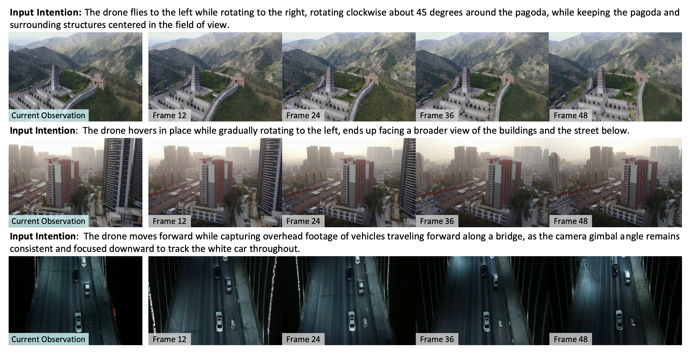
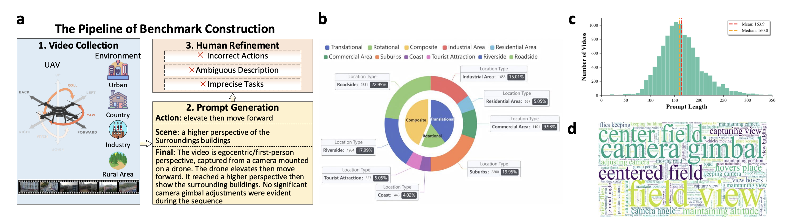
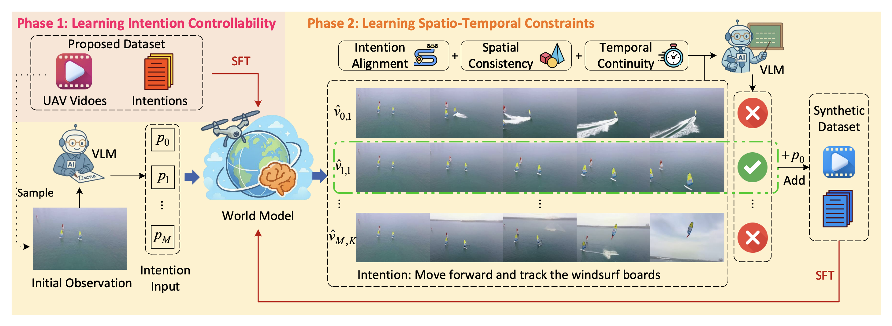
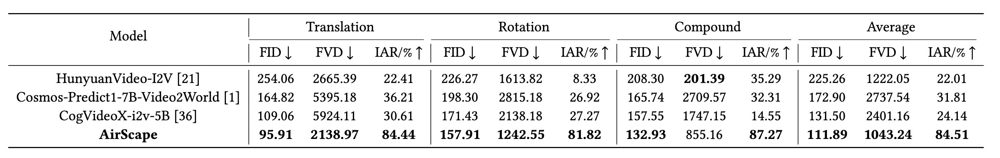

Challenges
The paper addresses the fundamental problem of enabling robots to predict outcomes of their motion intentions in 3D space, specifically for six-degree-of-freedom (6DoF) aerial agents like drones. The main challenges include:
1. Lack of aerial datasets: Training world models requires firstperson perspective videos and corresponding textual prompts about aerial agents' actions or tasks. Existing datasets are either third-person views or ground-based perspectives from robots or vehicles.
2. Distribution gap: In terms of text input, existing open-source foundation models focus on generating videos from detailed textual descriptions, whereas world models rely on concise instructions or action intents. In terms of video, training data for open-source foundation models mostly consists of third-person videos with limited visual changes, while embodied first-person perspectives typically have narrower fields of view and larger visual changes, increasing training difficulty.
3. Generation diversity: Drones operate in 6DoF with high flexibility. Compared to ground vehicles, generated scenes include lateral translation, in-place rotation, camera gimbal adjustments, and combinations of multiple actions, making generation more challenging. The aerial spatial world model is required to simulate more complex changes in relative position, perspective variation, and parallax effects.
Outdoor
Question: Navigation Instruction given at initial position: [Observe around the square area, then fly towards the highway, then turn left and land on the roof of the building on the left]. You move according to a series of movement instructions. What are you doing now?
- A. I look around the square area.
- B. I turn left and land on the roof of the building on the left.
- C. I fly towards the road.
- D. I fly over the park.
- E. I land.
Indoor
Question: What will be the first-time appearance order of the following categories in the video: table, backpack, trash bin, lamp?
- A. table, backpack, trash bin, lamp
- B. backpack, lamp, trash bin, table
- C. lamp, table, trash bin, backpack
- D. backpack, table, trash bin, lamp
Dataset
We present an 11k embodied aerial agent video dataset along with corresponding annotations of motion intention, aligning the inputs and outputs of the aerial world model. The proposed dataset exhibits diversity across multiple dimensions, including actions, areas, scenes, and tasks, as illustrated by the examples below.
Action
Area
Scene
Task
Method
We propose a two-phase training framework to build an aerial world model capable of predicting future observations based on current egocentric views and natural language motion intentions. The model is trained to generate physically plausible future video sequences in 6DoF space, reflecting both semantic intention and spatio-temporal consistency.
Phase 1: Learning Intention Controllability
In the first phase, we perform supervised fine-tuning on a pre-trained video generation model using a dataset of paired aerial videos and their corresponding high-level textual motion intentions. This phase enables the model to understand and respond to concise, goal-oriented commands such as "The drone flies toward the blue building" as opposed to passive visual descriptions. By aligning the model's generative process with embodied control semantics, the foundation model begins to function as a predictive world model.
Since aerial agents operate in 6DoF space involving translation, rotation, and gimbal changes, our dataset includes diverse scenarios to encourage robust intention understanding. The model learns to generate temporally coherent and spatially aligned video predictions based on the current visual input and a single-sentence motion command.
Phase 2: Learning Spatio-Temporal Constraints
Despite initial fine-tuning, model outputs may still contain unrealistic or unstable predictions. To address this, we introduce a self-play strategy combined with large multimodal models (LMMs) to enforce physical consistency. This phase enhances the world model’s ability to generate high-fidelity video sequences by filtering synthetic generations through a rejection sampling mechanism.
The process includes (a) sampling a current frame and generating a motion intention using LMMs, (b) producing candidate video predictions under that intention, and (c) evaluating them based on four criteria: intention alignment, spatial consistency, temporal continuity, and adherence to projective geometry. LMMs act as critics to select the most realistic prediction.
Accepted video-intention pairs are collected into a synthetic dataset and used to further fine-tune the world model. This iterative loop improves the model’s capability to generate videos that not only match the intention but also obey real-world physical constraints, even in complex aerial scenes.
Experiment
Experimental Setup
We split the proposed dataset into training and testing sets in a 9:1 ratio. In Phase 1, we fine-tune the video generation model CogVideoX-i2v-5B with key hyperparameters: resolution of 49×480×720 (frames×height×width), batch size of 2, gradient accumulation steps of 8, and total 10 training epochs on 8 NVIDIA A800-SXM4-40GB GPUs. For Phase 2, we use Gemini-2.0-Flash as the vision-language model (VLM) to support the self-play process, due to its strong video understanding capability and fast inference.
Evaluation metrics focus on both visual quality (FID, FVD) and semantic consistency between generated future observations and motion intentions. We report performance under three 6DoF motion types: Translation, Rotation, and Compound, along with the averaged results across all tasks.
RQ1: How does AirScape perform compared to prior methods?
Quantitative results in the table below show that AirScape outperforms all baseline methods across key metrics. Compared with state-of-the-art models like Cosmos-Predict1-7B and HunyuanVideo-I2V, AirScape achieves improvements of +14.91% in FID, +14.63% in FVD, and +165.64% in IAR. Especially under the Rotation setting, which emphasizes physical consistency, AirScape significantly surpasses other approaches.
RQ2: Has AirScape Learned Spatio-Temporal Constraints?
As shown in the case analysis below, AirScape produces physically plausible and intention-aligned video predictions, while baseline models often violate physical laws. For example, in cases of 6DoF motion, HunyuanVideo-I2V and Cosmos may generate distorted objects, unrealistic camera shifts, or discontinuous scenes. AirScape maintains stable depth, object continuity, and smooth transitions, indicating a robust understanding of spatio-temporal constraints learned via self-play.

RQ3: What are the effects of the self-play mechanism?
The self-play pipeline is key to injecting physical constraints into the model. For each sampled input, multiple video candidates are generated via prompt variation and random seeding. The VLM (e.g., Gemini-2.0-Flash) evaluates and selects the candidate that best aligns with the intended motion while satisfying spatio-temporal coherence. This mechanism filters low-quality generations and improves learning stability during fine-tuning.

Citation
@misc{zhao2025airscapeaerialgenerativeworld,
title={AirScape: An Aerial Generative World Model with Motion Controllability},
author={Baining Zhao and Rongze Tang and Mingyuan Jia and Ziyou Wang and Fanghang Man and Xin Zhang and Yu Shang and Weichen Zhang and Chen Gao and Wei Wu and Xin Wang and Xinlei Chen and Yong Li},
year={2025},
eprint={2507.08885},
archivePrefix={arXiv},
primaryClass={cs.RO},
url={https://arxiv.org/abs/2507.08885},
}